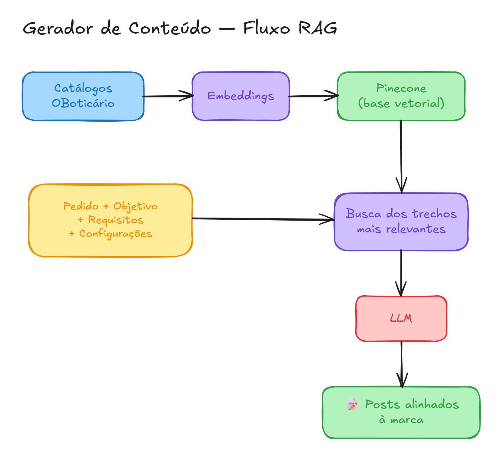

Content Generator
Content in the brand's voice, in seconds. An AI trained on OBoticário's catalogs that writes posts aligned with the identity — without leaving the tone, without making things up.
On this page
The Content Generator is an AI application, built in Streamlit, that produces text content aligned with the brand with speed and consistency. Unlike a generic chat, it is connected to a knowledge base on Pinecone, where several documents and catalogs from Grupo O Boticário have been embedded. This way, each generated text is grounded in the brand's real identity — the AI understands the standard and keeps it in every post it writes.
You describe the goal, add requirements, adjust the settings and make a request. In seconds, you get multiple posts ready to publish.
#✨ Highlights
- 🧠 Grounded in the brand (RAG + Pinecone) — retrieves real passages from the catalogs before writing, reducing hallucination and keeping the identity.
- 🎛️ Deep personalization — goal, extra requirements, quantity, context depth, length, LLM model and language.
- 📦 Multiple posts per request — generate a batch of variations at once.
- ⚡ Fast and code-free — from briefing to content in a few clicks.
#Useful links
| Title | Link |
|---|---|
| 💻 Source code (GitHub) | Go to the repository |
| ▶️ How to run the project | Installation guide |
| ⌨️ Terminal command | streamlit run web_app.py |
| 🌐 Try it now (Streamlit) | http://localhost:8501/content_generator |
#Context
Marketing teams need to produce a lot of content, fast — but in the brand's right voice. Generic AI tools solve speed, but slip on the essentials: they leave the tone, ignore the real portfolio and sometimes make up information.
The Content Generator was born to close this gap. By anchoring generation in a vector database (Pinecone) fed with OBoticário's catalogs, it combines the best of both worlds: the speed of an LLM with the consistency of someone who really knows the brand. The result is scalable, coherent content, ready to publish.
#How it works
The project follows a RAG (Retrieval-Augmented Generation) architecture:

- Indexing — OBoticário's documents are turned into embeddings and stored in Pinecone.
- Retrieval — for each request, the system fetches the most relevant passages from the base (controlled by Maximum results).
- Generation — the LLM writes the posts using this context + your settings, respecting tone, length and language.
#🎚️ Features and customization
Everything can be controlled right in the sidebar:
| Setting | What it does |
|---|---|
| 🗂️ Database | Chooses the knowledge base used as context (e.g.: Oboticário). |
| 🎯 Content Goal | Defines the goal of the text (e.g.: blog articles to attract leads at the top of the funnel, with an informative tone). |
| ➕ Extra Requirements | Specific instructions and restrictions (e.g.: avoid jargon, include a CTA, use subheadings, do not mention competitors). |
| 🔢 Amount of content | Number of posts generated per request (1–5). |
| 📚 Maximum results (context) | How many passages from the base feed the generation (RAG depth). |
| 📏 Length range | Range of text length (e.g.: 700–1200). |
| 🤖 Language Model (LLM) | Model selection (e.g.: gpt-4.1-mini). |
| 🌐 Language | Output language of the content. |
It is this combination of controls that gives the posts high personalization — from the target audience to the length, from the tone to the model used.
#Use cases
#1. Seasonal campaigns
#"Quero uma campanha divulgando o kit de maquiagem para dia das mães" → 2 posts generated in seconds.
#Surpreenda no Dia das Mães com Kits de Maquiagem Especiais
Conheça os kits de maquiagem ideais para presentear suas clientes no Dia das Mães e valorize beleza, cuidado e exclusividade em uma data tão especial.
O Dia das Mães é a ocasião perfeita para oferecer presentes que transmitam carinho e cuidado, valorizando a beleza única de cada mulher. Pensando nisso, apresentamos nossos kits exclusivos de maquiagem, desenvolvidos especialmente para esse momento. Entre as opções, destacam-se a Maleta de Maquiagem e o Kit de Pincéis Silver Essentials, criando combinações práticas e sofisticadas que facilitam o dia a dia. Além disso, toda a linha SOY Vegan e de edição limitada traz alta pigmentação, textura aveludada e acabamento luxuoso, evidenciando a personalidade e o estilo de cada mãe. A embalagem exclusiva, com detalhes sofisticados e necessaire prática, torna o presente ainda mais especial. Invista em kits que unem qualidade, beleza e cuidado, proporcionando uma experiência única para as pequenas e médias empreendedoras que desejam presentear com significado e estilo nesta data tão marcante.
Call to Action: Descubra os kits de maquiagem perfeitos para o Dia das Mães e encante suas clientes com presentes que fazem a diferença. Acesse nosso site e aproveite condições especiais!
#Hashtags
#DiaDasMães #Maquiagem #PresentesEspeciais #CuidadosComAMãe #BelezaVegana #KitsDeMaquiagem #MakeB #Empreendedoras #BelezaComCarinho
#Sources Used
- Kit de pincéis Silver Essentials com pincéis variados e necessaire por R$159,90.
- Maleta de Maquiagem, edição limitada vegana com alta pigmentação e acabamento sofisticado.
- Kits com embalagem exclusiva e necessaire, com detalhes em alto relevo.
- Produtos veganos, com textura confortável e acabamento natural e aveludado.
- Foco no cuidado e na valorização personalizadas para o Dia das Mães.
#Kit de Maquiagem para o Dia das Mães: Como Escolher o Presente Ideal
Descubra dicas práticas para escolher um kit de maquiagem perfeito para o Dia das Mães, garantindo um presente que une beleza e cuidado.
Imagine que você quer presentear sua mãe com algo especial e útil neste Dia das Mães, mas não sabe por onde começar. Um kit de maquiagem pode ser a resposta ideal! Kits como o da linha Make B. oferecem produtos essenciais como máscara para cílios e delineadores, perfeitos para quem ama realçar a beleza natural de forma prática. Alguns kits acompanham necessaires charmosas, facilitando o armazenamento e o transporte dos produtos. Além disso, vários itens são veganos e trazem embalagens elegantes, mostrando cuidado com o meio ambiente e sofisticação. Para quem quer opções mais completas, existem paletas de sombras com diversas cores ou maletas que organizam tudo em um só lugar, facilitando a rotina de beleza. Aproveite as promoções que oferecem economia significativa e escolha o kit que mais combina com o estilo da sua mãe. Assim, você presenteia com carinho, qualidade e praticidade, tornando o dia dela ainda mais especial.
Call to Action: Explore agora os kits de maquiagem especiais para o Dia das Mães e escolha o presente perfeito!
#Hashtags
#DiaDasMães #KitDeMaquiagem #PresentesCriativos #MakeB #CuidadosDeBeleza #BelezaVegana #MaquiagemPrática #Promoção #Presentes2024 #DicasDePresente
#Sources Used
- Kit Make B. com máscara de cílios e delineador, embalagem com nécessaire, valor e detalhes do produto.
- Paletas de sombras veganas com acabamento natural e iluminado, embalagem sofisticada com espelho.
- Maleta de maquiagem com descontos especiais e tamanho compacto.
- Informações sobre kits de maquiagem com ingredientes veganos e acabamento aveludado.
- Detalhes sobre promoções e embalagens exclusivas para presentes de Dia das Mães.
#"Vale sobre as maquiagens veganas da OBoticário" → 2 posts generated in seconds.
#Maquiagem que faz bem para você e para o planeta: descubra as linhas veganas do Boticário!
As linhas 100% veganas do Boticário provam que é possível se maquiar com consciência sem abrir mão de cor, cobertura e durabilidade. Vem ver o que eu tenho amado!
Beleza com propósito é o que eu mais busco nos produtos que uso no dia a dia — e foi exatamente isso que encontrei nas linhas 100% veganas do Boticário. Desde que comecei a testar, não consigo mais imaginar minha nécessaire sem eles!
A linha Intense é simplesmente completa: a Base Líquida Efeito Mate controla o brilho, protege da luz azul e ainda tem acabamento HD impecável. O Corretivo Líquido disfarça olheiras e imperfeições com alta cobertura, e o melhor: é 100% vegano! Para os olhos, a Máscara para Cílios Bye Bye Panda promete não borrar e garante um volume absurdo. Já o Lápis para Olhos tem traço fino, vitamina E e é à prova d'água.
Para as sobrancelhas, a linha Make B. traz a Caneta Microblading e a Máscara Gel Brow Lamination, ambas veganas e com resultado profissional em casa. O Blush em Pó e a Palette de Blush completam o look com cor e sofisticação.
E nos lábios? O Batom Cremoso Intense tem até 4 horas de duração, FPS 25 e ultrapigmentação. Existe combinação melhor? Produtos que cuidam de você, respeitam os animais e ainda entregam resultado de verdade. Isso é o Boticário vegano para mim!
Call to Action: Corre para o site ou loja mais próxima do Boticário e garanta os seus produtos veganos favoritos! Conta aqui nos comentários qual você quer testar primeiro. 💚
#Hashtags
#Boticário #MaquiagemVegana #VeganoBoticário #Intense #MakeB #BelezaComPropósito #MaquiagemConsciente #CrueltyFree #LinhaVegana #BelezaSustentável
#Sources Used
- LINHA 100% VEGANA - Intense: Base Líquida Efeito Mate, Corretivo Líquido, Máscara para Cílios Bye Bye Panda, Lápis para Olhos com Vitamina E e à prova d'água
- LINHA 100% VEGANA - Make B.: Up Brow Caneta Microblading, Máscara Gel para Sobrancelhas Brow Lamination, Blush em Pó, Palette de Blush, Corretivo Líquido Effect
- Batom Cremoso Intense: cor intensa, durabilidade de até 4 horas, FPS 25, ultrapigmentação
- Máscara para Cílios Bye Bye Panda: não borra, volume e definição
- Base Líquida Efeito Mate Intense: controla brilho e oleosidade, protege da luz azul, anti-imperfeições, acabamento HD
#Maquiagem Vegana do Boticário: Tudo que Você Precisa Saber Antes de Comprar
Se você quer se maquiar sem abrir mão dos seus valores, o Boticário tem uma linha 100% vegana completa e acessível. Vem ver o que eu descobri!
Você sabia que dá pra montar um nécessaire completo só com produtos veganos do Boticário? Eu fiz isso e vou te contar como.
Primeiro, a base. A Base em Pó Mineral da Make B. (R$ 119,90) é vegana, hipoalergênica, tem FPS 25 e ainda cabe na bolsa. Perfeita para retoques!
Para os olhos, o Lápis para Olhos da Intense (R$ 44,90) tem vitamina E, traço fino e não borra. Já a Máscara para Cílios Bye Bye Panda garante volume sem transferir. Resultado impecável!
Nos lábios, o Batom Cremoso Intense tem ultrapigmentação, FPS 25 e dura até 4 horas. Existe em vários tons, do nude ao vermelho.
Para sobrancelhas, a Caneta Microblading Up Brow da Make B. (R$ 74,90) entrega um efeito natural incrível. E é vegana!
E o acabamento? O Blush em Pó Make B. (R$ 79,90) vem em cores como berry, coral e rose — todas veganas e cheias de cor.
O melhor: muitos produtos estão com descontos de até 40%. Então não tem desculpa pra não testar!
Call to Action: Acesse o site do Boticário agora, monte seu nécessaire vegano e aproveite os descontos especiais. Compartilhe nos comentários qual produto você quer testar primeiro! 💚
#Hashtags
#MaquiagemVegana #OBoticario #MakeB #Intense #VeganoEBonito #BelezaConsciente #MaquiagemNatural #CrueltyFree #DicasDeBeleza
#Sources Used
- LINHA 100% VEGANA - Base em Pó Mineral Make B., R$ 119,90, hipoalergênico, FPS 25
- Lápis para Olhos Intense, R$ 44,90, Vitamina E, traço fino, não borra
- Máscara para Cílios Bye Bye Panda, 11g, R$ 62,90
- Batom Cremoso Intense, R$ 34,90, ultrapigmentação, FPS 25, cor intensa, durabilidade de até 4 horas
- Up Brow Caneta Microblading Make B., R$ 74,90, VEGANO
- Blush em Pó Make B., R$ 79,90, cores berry, coral, rose, brown - VEGANO
- EM ITENS SELECIONADOS DE INTENSE ATÉ 40% de desconto
#"Crie um post apresentando os perfumes da linha Malbec" → 2 posts generated in seconds.
#Malbec: a linha de perfumes que transforma sua presença em algo inesquecível
Descubra como a linha Malbec une sofisticação, elegância e personalidade em fragrâncias que conquistam pelo cheiro e pela história que contam.
Um bom perfume não apenas perfuma — ele comunica quem você é antes mesmo de você falar. E é exatamente isso que a linha Malbec foi criada para fazer.
Cada fragrância da linha carrega uma identidade própria. O Malbec Noir é inspirado no ritual de colheita das uvas Pinot Noir, combinando notas frutadas com pimentas e a intensidade amadeirada do sândalo. Para quem busca algo mais elegante e envolvente, o Malbec Black traz nuances de whisky, baunilha e notas de couro em uma fragrância amadeirada oriental. Já o Malbec Signature Eau de Parfum eleva a experiência com a preciosa madeira oud, ingrediente clássico da perfumaria fina.
Para quem prefere algo mais puro e fresco, o Malbec Icon resgata o aspecto natural e jovem do vinho combinado às madeiras inconfundíveis da linha. E o clássico Malbec Desodorante Colônia é produzido com exclusivo álcool vínico envelhecido em barris de carvalho — um detalhe que faz toda a diferença.
Além dos perfumes, a linha oferece kits presenteáveis, body spray, loção hidratante corporal e sabonetes, todos veganos. Uma experiência completa de bem-estar e sofisticação para o dia a dia.
Call to Action: Encontre a fragrância Malbec que combina com a sua personalidade e eleve sua presença a outro nível. Explore a linha completa agora!
#Hashtags
#Malbec #PerfumeMasculino #FragrânciasQueConquistam #SofisticaçãoEmCadaGota #MalbecNoir #MalbecBlack #MalbecSignature #PerfumariaFina #EstiloMasculino #BelezaMasculina
#Sources Used
- Malbec Noir é uma fragrância inspirada no ritual de colheita das uvas Pinot Noir que traz o contraste das notas frutadas com as pimentas e a intensidade amadeirada do sândalo.
- Malbec Black é uma fragrância amadeirada elegante com nuances de whisky, baunilha e notas de couro.
- Malbec Signature Eau de Parfum: A combinação única do coração de Malbec com a madeira oud, ingrediente precioso na perfumaria fina.
- Malbec Icon traz o aspecto mais puro, natural e jovem do vinho, combinado às madeiras inconfundíveis de Malbec.
- Malbec Fragrância amadeirada produzida com exclusivo álcool vínico envelhecido em barris de carvalho.
- Produtos veganos da linha Malbec incluindo kits presenteáveis, body spray, loção desodorante hidratante corporal e sabonetes.
#Qual perfume Malbec combina com você? Um guia prático para escolher sua fragrância
Escolher um perfume pode parecer difícil, mas com o guia certo fica fácil. Descubra qual opção da linha Malbec combina com seu estilo e ocasião.
Você está se preparando para uma reunião importante e quer causar uma boa impressão sem exagerar. Ou talvez queira um perfume para o dia a dia que dure horas. A linha Malbec tem uma opção para cada momento.
Para quem busca elegância clássica:
O Malbec Desodorante Colônia é produzido com álcool vínico envelhecido em barris de carvalho. Fragrância amadeirada com notas de bergamota, cedro e lavanda. Sofisticação sem complicação.
Para ocasiões especiais:
O Malbec Signature Eau de Parfum combina o coração de Malbec com madeira oud, ingrediente precioso na perfumaria fina. Fragrância amadeirada e ambarada, perfeita para destacar sua presença.
Para quem prefere algo mais intenso:
O Malbec Black traz nuances de whisky, baunilha e notas de couro. Amadeirado oriental para quem quer ser inesquecível.
Para explorar sem compromisso:
Experimente o Kit Malbec com 7 miniaturas de 4 ml cada, incluindo Malbec, Vert, Gold, Magnetic, Black, Bleu e Flame. Ideal para descobrir sua favorita antes de investir.
Todos os produtos da linha são veganos e estão disponíveis em versões refil, unindo sofisticação e consciência ambiental.
Call to Action: Acesse agora o catálogo completo da linha Malbec e encontre a fragrância que vai definir a sua marca pessoal!
#Hashtags
#Malbec #PerfumeMasculino #FragrânciaAmadeirada #MalbecBlack #MalbecSignature #DicaDePerfume #EstiloMasculino #PerfumariaBoticário #EscolhaComEstilo #VidaSofisticada
#Sources Used
- Malbec Desodorante Colônia - fragrância amadeirada produzida com exclusivo álcool vínico envelhecido em barris de carvalho.
- Malbec Signature Eau de Parfum - combinação única do coração de Malbec com a madeira oud, ingrediente precioso na perfumaria fina. Fragrância amadeirada ambarada.
- Malbec Black - fragrância amadeirada elegante com nuances de whisky, baunilha e notas de couro.
- Kit Malbec 7 unidades com 4 ml cada - inclui Malbec, Vert, Gold, Magnetic, Black, Bleu e Flame.
- Todos os produtos da linha Malbec são veganos e possuem versões refil disponíveis.
#Stack
- Streamlit — application interface
- Pinecone — vector database (semantic search)
- Embeddings + LLM (GPT) — context retrieval and text generation
- Python
Source: ipynb_contents/Streamlit Applications/Content Generator.ipynb